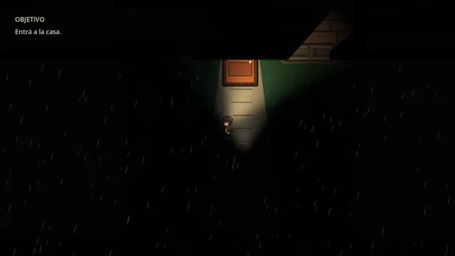
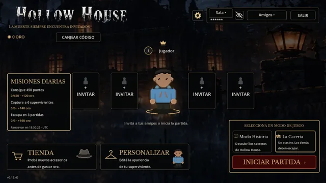
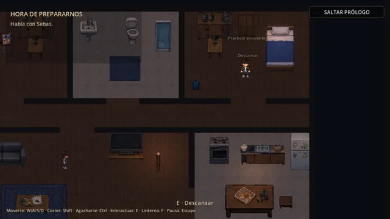
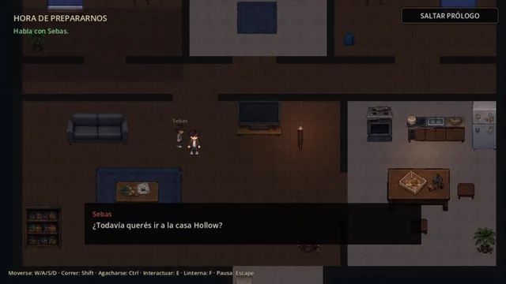
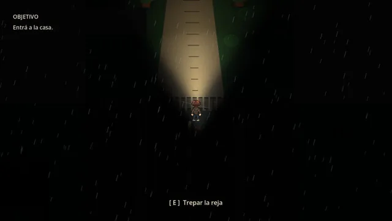
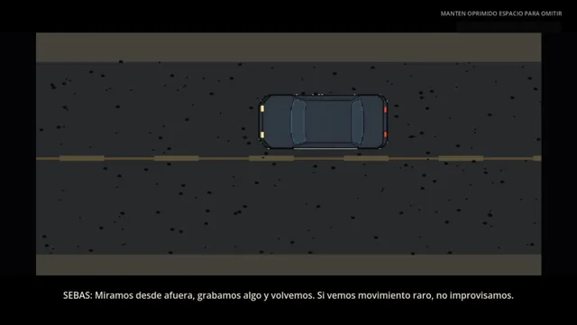
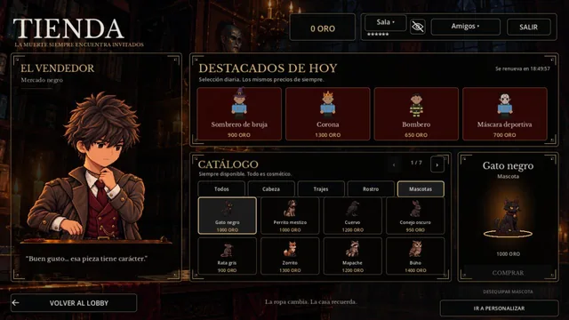
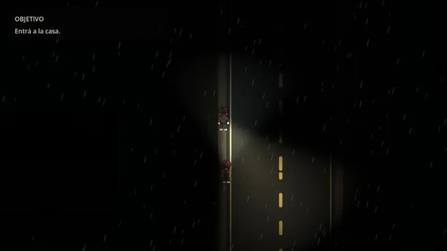
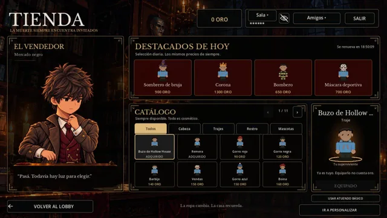

DENTRO DE HOLLOW HOUSE · 0.13.40
No todo se ve con la linterna.
La casa del prólogo, los exteriores de la mansión y los menús del juego publicado. Abrí cada imagen para verla completa.



















Imágenes de la versión pública 0.13.40 para Linux, con su encuadre e iluminación originales. Las pantallas de lobby y tienda muestran sus menús, no una partida online ni compras realizadas.
WINDOWS · LINUX · WEB EN ITCH.IO
Ya conoces el camino. Ahora entra.
El caso continúa dentro de Hollow House.